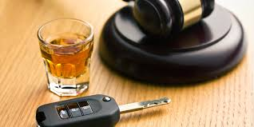

"L'eau conduit l'électricité, mais si tu mets du vin dedans, elle n'a plus le droit de conduire", Jean-Marie Gourio.

L'alcool est l'une des premières causes de mortalité sur la route et entraîne de très nombreux accidents chaque année (30% des acidents les plus graves sont dûs à l'alcool), de ce fait elle fait l'objet d'une règlementation très stricte sur sa consommation avant de prendre le volant en France. En effet, il est interdit de conduire avec une concentration d'alcool supérieur ou égale à 0,5 gramme par litre de sang, 0,2 g/L pour les conducteurs en période probatoire ou en conduite accompagnée et depuis 2019 les détenteurs d'un éthylotest antidémarrage sont aussi soumis à ce seuil d'alcoolémie à ne pas dépasser.Le contrôle de cette alcoolémie peut être aléatoire ou obligatoire par les forces de l'ordre, il s'effectuera alors à l'aide d'un éthylotest.
Les sanctions
| Causes | Conséquences |
|---|---|
| En cas d'infraction pour un conducteur en période probatoire, soit avec un taux supérieur ou égal à 0,2 g/L: | - Retrait de 6 points sur le permis de conduire - Amende forfaitaire de 135€ - Immobilisation du véhicule |
| Pour un taux compris entre 0,5 g/L et 0,8 g/L, il s'agit d'une contravention de 4e classe: | - Retrait de 6 points sur le permis de conduire - Amende forfaitaire de 135€ - Immobilisation du véhicule - Suspension du permis (jusqu’à 3 ans) |
| Pour un taux égal ou supérieur à 0,8 g/L, il s'agit d'un délit: | - Retrait de 6 points sur le permis de conduire - Jusqu’à 4500 euros d'amende - Immobilisation du véhicule - Annulation du permis (jusqu’à 3 ans) - Stage obligatoire de sensibilisation à la sécurité routière aux frais du contrevenant - 2 ans d’emprisonnement - Interdiction de conduire un véhicule non équipé d’un dispositif homologué d’éthylotest antidémarrage (EAD), pour une durée de 5 ans au maximum. (La violation de cette interdiction constitue un délit, puni de 2 ans d’emprisonnement et de 4 500 € d’amende.) |
| En cas d'accidents implicant d'autres usagers, provoqués sous l'emprise de l'alcool et entraînant des blessures graves: | - 5 ans d'emprisonnement - Amende de 75 000€ - Retrait de 6 points sur le permis de conduire - Suspension ou annulation de plein droit de 10 ans du permis de conduire (sans sursis ni « permis blanc ») - Immobilisation ou confiscation du véhicule |
| En cas d'accidents implicant d'autres usagers, provoqués sous l'emprise de l'alcool et entraînant le décès d'une personne: | - 7 ans d'emprisonnement - Amende de 100 000 euros - Retrait de 6 points sur le permis de conduire - Annulation de plein droit de 10 ans du permis de conduire (sans sursis ni « permis blanc ») |
| En cas de consommation de stupéfiants, associée à un taux d’alcool prohibé: | - 3 ans d’emprisonnement - 9 000 euros d’amende - Retrait de 6 points - Suspension ou annulation de 3 ans ou plus du permis de conduire - Obligation d’accomplir à ses frais un stage de sensibilisation à la sécurité routière - Immobilisation ou confiscation du véhicule |
| Pour un refus de se soumettre à une vérification de l'alcoolémie: | - le conducteur est passible des mêmes sanctions qu'une personne ayant commis un délit avec un taux égal ou supérieur à 0,8 g/L. |